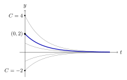
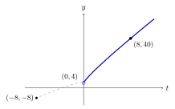
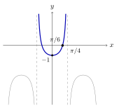
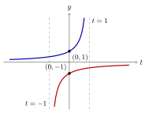
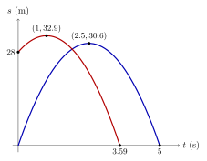
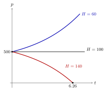
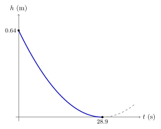

9.1 Basic Ideas¶
Guiding question
In Section 6.1 you were given a velocity and asked for a position: you knew the derivative of an unknown function and wanted the function. That is already a differential equation. In general a differential equation is an equation whose unknown is a function, and which links the function to its own derivatives. Such equations describe how things change: a cooling cup of coffee, a harvested forest, a draining tank, a falling stone. This section gives the vocabulary (order, linear, solution, general solution, initial value problem), shows how to check a proposed solution by substitution, and solves the simplest equations, those of the form \(y'=f(t)\), by integration. We prove what the integration method really gives and why an equation of order \(n\) has \(n\) arbitrary constants. We also watch the domain of a solution: it is often smaller than the domain of the formula. Methods for harder equations come in later sections of this chapter.
By the end of this section you should be able to:
-
state the order of a differential equation and decide whether it is linear;
-
verify by substitution that a function (or a family of functions) is a solution, including the initial conditions;
-
find the general solution and the solution of an initial value problem for \(y^{(n)}=f(t)\) by integration;
-
determine the domain of a solution from the equation, the initial condition and the context;
-
set up and check simple models: motion under gravity, a harvested resource, a draining tank;
-
prove each theorem of this section.
What is a differential equation?¶
Definition 9.1.1: Differential equation, order, linear
A differential equation is an equation that contains an unknown function \(y\) of one independent variable (usually \(t\) or \(x\)) together with one or more of its derivatives. Its order is the highest order of a derivative that appears. It is linear if it can be written
where \(a_0,\dots,a_n\) and \(g\) are given functions of the independent variable: \(y\) and its derivatives appear only to the first power, are not multiplied together, and are not inside another function. Otherwise the equation is nonlinear.
The coefficients \(a_j(t)\) may be as complicated as you like; only the dependence on \(y\) matters. The unknown is not a number, as in \(x^2=4\), but a function.
Example 9.1.2: Order and linearity
State the order of each equation and whether it is linear.
(a) \(\dfrac{dy}{dx}+4y=\cos x\) (b) \(y''+16y=0\) (c) \(y'(t)=0.1\,y\,(100-y)\)
(d) \(t^2y'''-2t\,y'+e^ty=\ln t\) (e) \(y''+\sin y=0\) (f) \(y\,y'=t\)
Solution. Find the highest derivative, then look at how \(y\) and its derivatives enter. (a) Highest derivative \(y'\): order \(1\). The terms \(y'\) and \(4y\) are of the first power and the right side \(\cos x\) depends only on \(x\): linear. (b) Highest derivative \(y''\): order \(2\); every term has the form (function of \(t\))\(\times y\) or (function of \(t\))\(\times y''\): linear. (c) Order \(1\). The right side is \(10y-0.1y^2\), which contains \(y^2\): nonlinear. (d) The highest derivative is \(y'''\): order \(3\). The coefficients \(t^2\), \(-2t\) and \(e^t\) depend on \(t\) only, and the right side \(\ln t\) too: linear (variable coefficients are allowed). (e) Order \(2\). The unknown appears inside the sine, \(\sin y\): nonlinear. (f) Order \(1\). The product \(y\,y'\) multiplies the unknown by its derivative: nonlinear.
Knowledge Check 9.1.1: Order and linearity
State the order of each equation and whether it is linear: (i) \(y''+t\,y'=e^{-t}\); (ii) \(y'=y+t^2\); (iii) \(y'''=y\,y'\).
A solution should make the equation a true statement at every point of some interval. Because a derivative needs a function that is defined on both sides of a point, we always work on an interval.
Definition 9.1.3: Solution, general solution, initial value problem
A solution of a differential equation of order \(n\) on an interval \(I\) is a function \(y\), \(n\) times differentiable on \(I\), such that substituting \(y,y',\dots,y^{(n)}\) turns the equation into an identity for every \(t\) in \(I\). The interval \(I\) is the domain of the solution.
The general solution is the family of all solutions, written with \(n\) arbitrary constants. Initial conditions specify the values of \(y,y',\dots,y^{(n-1)}\) at one point \(t_0\). A differential equation of order \(n\) together with \(n\) initial conditions is an initial value problem (IVP). A solution of the IVP is a function that solves the equation on an interval \(I\) containing \(t_0\) and meets the initial conditions. For \(n=1\) the IVP is
and the solution curve is a graph through the point \((t_0,y_0)\).
Verifying a solution¶
To check a candidate you do not need any method of solving: you differentiate and substitute.
Procedure 9.1.4: Verifying a solution by substitution
Given a differential equation and a function \(y\) (or a family of functions):
-
Compute every derivative that occurs in the equation.
-
Substitute into the left side and into the right side; simplify each until they are equal for every \(t\) in the interval.
-
For an IVP, also check each initial condition.
-
State the interval on which the check is valid.
Example 9.1.5: A family of solutions and an initial value problem
(a) Show that \(y(t)=Ce^{-3t}\) solves \(y'=-3y\) for every constant \(C\). (b) Solve the IVP \(y'=-3y\), \(y(0)=2\).
Solution. (a) By the Chain Rule, \(y'(t)=C\cdot(-3)e^{-3t}=-3Ce^{-3t}\). The right side is \(-3y(t)=-3Ce^{-3t}\). The two sides agree for every real \(t\) and every \(C\), so \(y=Ce^{-3t}\) is a family of solutions on \((-\infty,\infty)\). (b) The initial condition fixes \(C\): \(y(0)=Ce^{0}=C=2\). The solution is \(y(t)=2e^{-3t}\). Check: \(y'(t)=-6e^{-3t}=-3\cdot2e^{-3t}=-3y(t)\) and \(y(0)=2\). The figure shows several members of the family; the IVP singles out the one through \((0,2)\).

Figure. Solutions \(y=Ce^{-3t}\) for \(C=-2,-1,1,2,4\); the blue curve is the solution of the IVP.
Linear equations have a structure. In Example 9.1.5, if \(y_1=e^{-3t}\) is a solution then so is every constant multiple. This is no accident, and it is the reason the general solution of a linear equation can be built from a few special solutions.
Theorem 9.1.6: Sums and multiples of solutions of a linear equation
Let \(L[y]=y^{(n)}+p_{n-1}(t)\,y^{(n-1)}+\dots+p_1(t)\,y'+p_0(t)\,y\), where the \(p_j\) are given functions, and let \(y_1,y_2\) be \(n\) times differentiable on an interval \(I\). For all constants \(c_1,c_2\):
(a) \(L[c_1y_1+c_2y_2]=c_1L[y_1]+c_2L[y_2]\);
(b) if \(L[y_1]=L[y_2]=0\), then \(L[c_1y_1+c_2y_2]=0\);
(c) if \(L[y_p]=q\) and \(L[y_h]=0\), then \(L[y_p+y_h]=q\);
(d) if \(L[y_1]=L[y_2]=q\), then \(L[y_1-y_2]=0\).
Proof. (a) By the sum and constant-multiple rules for derivatives, \((c_1y_1+c_2y_2)^{(j)}=c_1y_1^{(j)}+c_2y_2^{(j)}\) for each \(j=0,1,\dots,n\). Multiply the \(j\)th identity by \(p_j\) (with \(p_n=1\)) and add over \(j\); the terms regroup as \(c_1L[y_1]+c_2L[y_2]\). (b) Put \(L[y_1]=L[y_2]=0\) in (a). (c) Apply (a) with \(c_1=c_2=1\): \(L[y_p+y_h]=q+0=q\). (d) Apply (a) with \(c_1=1\), \(c_2=-1\): \(L[y_1-y_2]=q-q=0\). ◻ ∎
The equation \(L[y]=0\) is called homogeneous; part (c) says a solution of \(L[y]=q\) plus any solution of the homogeneous equation is again a solution. The proof used the form of \(L\), so nothing like it works for a nonlinear equation (Pause and think 9.1.2 below).
Example 9.1.7: A second-order equation with two constants
(a) Show that \(y=C_1\cos4t+C_2\sin4t\) is a solution of \(y''+16y=0\) for all constants \(C_1,C_2\). (b) Solve the IVP \(y''+16y=0\), \(y(0)=2\), \(y'(0)=-4\).
Solution. (a) Check the two special functions, then use Theorem 9.1.6(b) with \(L[y]=y''+16y\). For \(y_1=\cos4t\): \(y_1'=-4\sin4t\), \(y_1''=-16\cos4t\), so \(y_1''+16y_1=-16\cos4t+16\cos4t=0\). For \(y_2=\sin4t\): \(y_2'=4\cos4t\), \(y_2''=-16\sin4t\), and \(y_2''+16y_2=0\). By the theorem, \(C_1y_1+C_2y_2\) is a solution for all \(C_1,C_2\), on \((-\infty,\infty)\). (b) Differentiate the family: \(y'(t)=-4C_1\sin4t+4C_2\cos4t\). At \(t=0\): \(y(0)=C_1\cos0+C_2\sin0=C_1=2\) and \(y'(0)=4C_2=-4\), so \(C_2=-1\). The solution is \(y(t)=2\cos4t-\sin4t\). Check: \(y''=-32\cos4t+16\sin4t=-16y\), so \(y''+16y=0\); \(y(0)=2\); \(y'(0)=-8\sin0-4\cos0=-4\).
An equation of order \(n\) has \(n\) constants, so it needs \(n\) initial conditions: here two, a position and a velocity. Why that count is correct is explained below for the simplest equations.
Solving \(y^{(n)}=f(t)\) by integration¶
When the right side does not involve \(y\), the equation \(y'=f(t)\) just asks for an antiderivative, as in Section 6.1.
Theorem 9.1.8: The equation \(y'=f(t)\)
Let \(f\) be continuous on an interval \(I\) and let \(t_0\in I\).
(a) If \(F\) is one antiderivative of \(f\) on \(I\), then the general solution of \(y'=f(t)\) on \(I\) is \(y=F(t)+C\): every function of this form is a solution, and every solution has this form.
(b) For every number \(y_0\), the IVP \(y'=f(t)\), \(y(t_0)=y_0\) has exactly one solution on \(I\), namely
Proof. (a) \((F+C)'=f\), so each \(F+C\) is a solution. Conversely let \(y\) be a solution on \(I\). Then \((y-F)'=f-f=0\) on \(I\). If \(t_1<t_2\) are in \(I\), the Mean Value Theorem (Calculus I) gives \(c\) in \((t_1,t_2)\) with \((y-F)(t_2)-(y-F)(t_1)=(y-F)'(c)\,(t_2-t_1)=0\). So \(y-F\) takes the same value at any two points of \(I\), that is, it is a constant \(C\). (b) Let \(Y(t)=y_0+\int_{t_0}^tf(x)\,dx\). By the Fundamental Theorem of Calculus (Part 1) \(Y'=f\) on \(I\), and \(Y(t_0)=y_0+0=y_0\), so \(Y\) solves the IVP. If \(y\) is any solution of the IVP, then \(y=Y+C\) by (a) (with \(F=Y\)), and \(y(t_0)=y_0=Y(t_0)+C\) gives \(C=0\), so \(y=Y\). ◻ ∎
This is Theorem 6.1.7 again, with \(t_0\) in place of \(0\): the position is the initial position plus the integral of the velocity. There are two ways to find the solution of an IVP, the antiderivative method (find \(F+C\), then use the condition to find \(C\)) and the integral method of part (b); they always agree.
Higher-order equations \(y^{(n)}=f(t)\) are solved by integrating \(n\) times, and each integration brings one constant.
Theorem 9.1.9: The equation \(y^{(n)}=f(t)\)
Let \(f\) be continuous on an interval \(I\), \(t_0\in I\), and let \(b_0,b_1,\dots,b_{n-1}\) be any numbers. Then the IVP
has exactly one solution on \(I\). In particular the general solution has exactly \(n\) free constants, which can be taken to be \(b_0,\dots,b_{n-1}\).
Proof. We use induction on \(n\). For \(n=1\) this is Theorem 9.1.8(b). Let \(n\ge2\) and assume the statement for \(n-1\). A function \(y\) solves the IVP of order \(n\) exactly when \(w=y'\) solves \(w^{(n-1)}=f\) with \(w(t_0)=b_1,\dots,w^{(n-2)}(t_0)=b_{n-1}\), and \(y(t_0)=b_0\). By the induction hypothesis there is exactly one such \(w\). By Theorem 9.1.8(b) applied to \(y'=w\) (the function \(w\) is continuous, being differentiable) there is exactly one \(y\) with \(y'=w\) and \(y(t_0)=b_0\). So there is exactly one solution. ◻ ∎
Pause and think 9.1.1: The constant on a broken domain
The function \(F(t)=-\dfrac1t\) is an antiderivative of \(f(t)=\dfrac1{t^2}\) on \((-\infty,0)\) and on \((0,\infty)\). Is \(y=-\dfrac1t+C_1\) for \(t<0\) and \(y=-\dfrac1t+C_2\) for \(t>0\), with \(C_1\ne C_2\), a solution of \(y'=\dfrac1{t^2}\) on \(t\ne0\)? Why does Theorem 9.1.8 demand an interval?
Answer and discussion
Yes: on \(t<0\) the derivative is \(\frac1{t^2}\), and on \(t>0\) it is \(\frac1{t^2}\), so \(y'=\frac1{t^2}\) at every \(t\ne0\). The constants may differ because there is no connection between the two pieces: the proof of Theorem 9.1.8(a) uses the Mean Value Theorem between two points of the domain, which needs the whole segment between them to lie in the domain. On \((-\infty,0)\cup(0,\infty)\) two points on opposite sides do not have that. So the theorem is stated on an interval; on a union of intervals, the constant is chosen separately on each.
Example 9.1.10: General solutions by integration
Find the general solution: (a) \(y'(t)=6\sin2t+8e^{-4t}\); (b) \(y''(t)=24t^2-3\cos3t+4\).
Solution. (a) By Theorem 9.1.8, the solutions are the antiderivatives. With \(u=2t\) and \(u=-4t\) (Theorem 8.1.1): \(\int6\sin2t\,dt=-3\cos2t\) and \(\int8e^{-4t}\,dt=-2e^{-4t}\). So \(y(t)=-3\cos2t-2e^{-4t}+C\). Check: \(y'=6\sin2t+8e^{-4t}\). (b) Integrate once: \(y'(t)=\int(24t^2-3\cos3t+4)\,dt=8t^3-\sin3t+4t+C_1\). Integrate again: \(y(t)=2t^4+\frac13\cos3t+2t^2+C_1t+C_2\), since \(\int(-\sin3t)\,dt=\frac13\cos3t\). Check: \(y'=8t^3-\sin3t+4t+C_1\) and \(y''=24t^2-3\cos3t+4\). Two integrations, two constants; by Theorem 9.1.9 these are all the solutions.
Example 9.1.11: Initial value problems, by two methods
Solve: (a) \(y'(t)=12e^{-t/4}\), \(y(0)=7\); (b) \(y'(t)=te^{t}\), \(y(0)=-1\).
Solution. (a) Antiderivative method. \(y(t)=\int12e^{-t/4}\,dt=-48e^{-t/4}+C\) (check: \(\frac{d}{dt}(-48e^{-t/4})=12e^{-t/4}\)). Then \(y(0)=-48+C=7\), so \(C=55\) and \(y(t)=55-48e^{-t/4}\). Check: \(y(0)=7\). As \(t\to\infty\), \(e^{-t/4}\to0\) and \(y\to55\): the solution rises toward the value \(55\) but never reaches it. (b) Integral method (Theorem 9.1.8(b) with \(t_0=0\)): \(y(t)=-1+\int_0^txe^x\,dx\). Integration by parts (Theorem 8.2.1) with \(u=x\), \(dv=e^x\,dx\) gives \(\int xe^x\,dx=xe^x-e^x\). So
Check: \(y'=e^t+(t-1)e^t=te^t\) and \(y(0)=-1\).
Knowledge Check 9.1.2: An initial value problem
Solve \(y'(t)=12e^{-t/4}\) with the initial condition \(y(0)=-5\) (compare Example 9.1.11(a)). What does \(y\) approach as \(t\to\infty\)?
The domain of a solution¶
A formula such as \(y=t+3t^{2/3}\) has its own domain, but as a solution of a differential equation it must be differentiable and must satisfy the equation. The domain of the solution is the interval containing \(t_0\) on which this is so.
Example 9.1.12: Domain from the equation
Solve each IVP and find the domain of the solution. (a) \(y'(t)=3+\dfrac2{\sqrt[3]t}\), \(y(8)=40\). (b) \(y'(x)=2\sec2x\tan2x\), \(y(\pi/6)=0\).
Solution. (a) Write the equation as \(y'=3+2t^{-1/3}\). By the power rule, \(y(t)=3t+2\cdot\frac32t^{2/3}+C=3t+3t^{2/3}+C\) (check: \(\frac{d}{dt}3t^{2/3}=2t^{-1/3}\)). The condition gives \(y(8)=24+3\cdot8^{2/3}+C=24+12+C=40\), so \(C=4\) and
As a formula the domain is all real \(t\). But \(y'=3+2t^{-1/3}\) is not defined at \(t=0\), so \(y\) solves the equation only on an interval that avoids \(0\). The initial point \(t_0=8\) lies in \((0,\infty)\), so the domain of the solution is \((0,\infty)\). The left branch (the same formula for \(t<0\)) solves the equation for other initial conditions. (b) With \(u=2x\), \(du=2\,dx\), and \(\frac d{du}\sec u=\sec u\tan u\): \(\int2\sec2x\tan2x\,dx=\sec2x+C\). So \(y=\sec2x+C\) and \(y(\pi/6)=\sec\frac\pi3+C=2+C=0\) gives \(C=-2\):
Check: \(y'=2\sec2x\tan2x\). Now \(\sec2x=1/\cos2x\) is undefined where \(\cos2x=0\), that is, at \(x=\pm\frac\pi4,\pm\frac{3\pi}4,\dots\). The point \(\frac\pi6\) lies between \(-\frac\pi4\) and \(\frac\pi4\), so the domain of the solution is \(\left(-\frac\pi4,\frac\pi4\right)\).


Figure. Left: \(y=3t+3t^{2/3}+4\); only the right branch (heavy) solves the IVP, and \(y'\) does not exist at \(t=0\). Right: \(y=\sec2x-2\); only the branch on \((-\frac\pi4,\frac\pi4)\) (heavy) solves the IVP.
Knowledge Check 9.1.3: Which branch?
Solve \(y'(t)=3+\dfrac2{\sqrt[3]t}\) with \(y(-8)=10\) and state the domain of the solution (compare Example 9.1.12(a)).
Even when the right side of a differential equation is perfectly smooth, the solution can fail to exist for all \(t\).
Example 9.1.13: A solution that blows up
(a) Show that \(y=\dfrac1{C-t}\) is a solution of the nonlinear equation \(y'=y^2\) on every interval on which \(C\ne t\). (b) Solve \(y'=y^2\) with \(y(0)=1\) and with \(y(0)=-1\), and find each domain. (c) Is \(y=0\) in the family?
Solution. (a) \(y=(C-t)^{-1}\), so by the Chain Rule \(y'=-(C-t)^{-2}\cdot(-1)=\dfrac1{(C-t)^2}=y^2\). (b) If \(y(0)=1\): \(\frac1C=1\), so \(C=1\) and \(y=\dfrac1{1-t}\). It is defined for \(t\ne1\); the point \(t_0=0\) lies in \((-\infty,1)\), so the domain is \((-\infty,1)\), and \(y\to\infty\) as \(t\to1^-\): the solution blows up in finite time. If \(y(0)=-1\): \(\frac1C=-1\), \(C=-1\) and \(y=\dfrac1{-1-t}=-\dfrac1{1+t}\), with domain \((-1,\infty)\) (it blows up as \(t\to-1^+\), backward in time). (c) No value of \(C\) gives \(y=0\), since \(\frac1{C-t}\ne0\). But \(y=0\) is a solution: \(0'=0=0^2\). It is an isolated solution not contained in the general solution, which is why we call \(y=1/(C-t)\) the general solution only in the sense of “the family of solutions the method produces”.

Figure. \(y=1/(1-t)\) on \((-\infty,1)\) and \(y=-1/(1+t)\) on \((-1,\infty)\); each stops at its vertical asymptote. The solution \(y=0\) is the \(t\)-axis.
Pause and think 9.1.2: Multiples of solutions
\(y_1=\dfrac1{1-t}\) solves the nonlinear equation \(y'=y^2\) on \((-\infty,1)\). Is \(2y_1\) a solution? For the linear equation \(y'=-3y\) the function \(2e^{-3t}\) is a multiple of the solution \(e^{-3t}\). Which step in the proof of Theorem 9.1.6 breaks for \(y'=y^2\)?
Answer and discussion
\(2y_1=\frac2{1-t}\) has \((2y_1)'=\frac2{(1-t)^2}\) but \((2y_1)^2=\frac4{(1-t)^2}\): not equal, so \(2y_1\) is not a solution. In the proof of Theorem 9.1.6(a) the step “multiply the identity by \(p_j\) and add” works because \(L\) is built from \(y\) and its derivatives to the first power. For \(y'=y^2\) the right side is \((cy_1)^2=c^2y_1^2\), not \(c\,y_1^2\): the constant multiple does not come out unchanged, and (a) fails.
Differential equations in action¶
Three models show how the domain is settled by the equation and also by the physical context. Here we only verify solutions; ways of finding them are the subject of later sections of this chapter.
Example 9.1.14: Motion in a gravitational field
A stone is launched straight up with speed \(v_0>0\) m/s from a height \(s_0\ge0\) m at \(t=0\). Take \(s\) positive upward, and neglect air resistance. By Newton’s second law \(s''(t)=-g\), with \(g=9.8\) m/s\(^2\). (a) Find \(s(t)\) and the domain of the solution. (b) Find the time and height of the highest point. (c) Which goes higher: the stone with \((v_0,s_0)=(24.5,0)\) or the one with \((9.8,28)\)?
Solution. (a) Integrate once: \(s'(t)=-9.8t+C_1\). The condition \(s'(0)=v_0\) gives \(C_1=v_0\). Integrate again: \(s(t)=-4.9t^2+v_0t+C_2\), and \(s(0)=s_0\) gives \(C_2=s_0\). By Theorem 9.1.9 this is the only solution:
The model is valid only while the stone is in the air, \(t\ge0\) and \(s(t)\ge0\). The quadratic \(-4.9t^2+v_0t+s_0\) has one positive root, \(T=\dfrac{v_0+\sqrt{v_0^2+19.6\,s_0}}{9.8}\) (quadratic formula), so the domain is \([0,T]\). (b) The highest point is where \(s'(t)=-9.8t+v_0=0\), that is \(t=\dfrac{v_0}{9.8}\). It is a maximum since \(s\) is a downward parabola. The height is
(c) With \((24.5,0)\): peak at \(t=\frac{24.5}{9.8}=2.5\) s, height \(\frac{24.5^2}{19.6}=30.625\) m. With \((9.8,28)\): peak at \(t=1\) s, height \(\frac{9.8^2}{19.6}+28=4.9+28=32.9\) m. So the slower stone launched from higher up goes higher (see the figure). They land at \(T=5\) s and \(T=\frac{9.8+\sqrt{9.8^2+19.6\cdot28}}{9.8}=1+\sqrt{\frac{47}7}\approx3.59\) s.

Figure. Position against time (not the path of the stone, which moves along a vertical line). Blue: \((v_0,s_0)=(24.5,0)\). Red: \((9.8,28)\).
Example 9.1.15: A harvesting model
A resource (timber or fish) with amount \(p(t)\) grows naturally at the rate \(rp\) while being harvested at the constant rate \(H>0\): \(p'(t)=rp(t)-H\), \(p(0)=p_0\), with \(r>0\). (a) Verify that \(p(t)=\left(p_0-\dfrac Hr\right)e^{rt}+\dfrac Hr\) solves the IVP. (b) Let \(r=0.2\) and \(p_0=500\). Describe the solutions for \(H=60,100,140\). (c) For which \(H\) is \(p\) constant, and when does the resource vanish if \(H=140\)?
Solution. (a) Differentiate: \(p'(t)=r\left(p_0-\frac Hr\right)e^{rt}=(rp_0-H)e^{rt}\). Substitute into the right side: \(rp-H=r\left(p_0-\frac Hr\right)e^{rt}+H-H=(rp_0-H)e^{rt}\). The sides agree. At \(t=0\): \(p(0)=p_0-\frac Hr+\frac Hr=p_0\). (b) Here \(\frac Hr=5H\) and \(p(t)=(500-5H)e^{0.2t}+5H\). For \(H=60\): \(p=200e^{0.2t}+300\), increasing. For \(H=100\): \(500-5H=0\), so \(p(t)=500\) for all \(t\). For \(H=140\): \(p=700-200e^{0.2t}\), decreasing. (c) The coefficient \(p_0-\frac Hr\) vanishes exactly when \(H=rp_0=0.2\cdot500=100\), the equilibrium case (harvest balances growth). For \(H=140\), \(p=0\) when \(200e^{0.2t}=700\), so \(e^{0.2t}=3.5\) and \(t=5\ln3.5\approx6.26\). The domain of the solution is \([0,5\ln3.5]\): after that the formula gives negative amounts, which have no meaning.

Figure. \(p'=0.2p-H\) with \(p(0)=500\): growth for \(H=60\), equilibrium for \(H=100\), collapse at \(t\approx6.26\) for \(H=140\).
Example 9.1.16: Flow from a tank (Torricelli’s law)
A cylindrical tank of cross-section \(A\) drains through a hole of area \(a\) in the bottom. By Torricelli’s law the depth \(h(t)\) of water satisfies \(h'(t)=-k\sqrt{h(t)}\), where \(k=\frac aA\sqrt{2g}\) and \(g=9.8\) m/s\(^2\). (a) Verify that \(h(t)=\left(\sqrt H-\frac{kt}2\right)^2\) solves the IVP with \(h(0)=H\), and find its domain. (b) Take \(H=0.64\) m, \(A=0.8\) m\(^2\) and \(a=0.01\) m\(^2\) and find when the tank is empty.
Solution. (a) Initial condition: \(h(0)=(\sqrt H)^2=H\). Differentiate with the Chain Rule: \(h'(t)=2\left(\sqrt H-\frac{kt}2\right)\left(-\frac k2\right)=-k\left(\sqrt H-\frac{kt}2\right)\). The equation requires \(h'=-k\sqrt h\), and \(\sqrt h=\sqrt{(\sqrt H-kt/2)^2}=\left|\sqrt H-\frac{kt}2\right|\). The two agree only when \(\sqrt H-\frac{kt}2\ge0\), that is for \(t\le\dfrac{2\sqrt H}k\). For larger \(t\) the formula is not a solution (its derivative is positive while \(-k\sqrt h<0\); physically, water does not flow back in). So the domain is \(\left[0,\dfrac{2\sqrt H}k\right]\). (b) \(\frac aA=\frac{0.01}{0.8}=\frac1{80}\) and \(k=\frac{\sqrt{19.6}}{80}=\frac{7\sqrt{10}}{400}\approx0.0553\) m\(^{1/2}\)/s (because \(\sqrt{19.6}=\sqrt{196/10}=14/\sqrt{10}\)). With \(\sqrt H=0.8\), \(h(t)=\left(0.8-\frac{7\sqrt{10}}{800}t\right)^2\). The tank is empty at \(T=\frac{2\sqrt H}k=\frac{1.6\cdot400}{7\sqrt{10}}=\frac{64\sqrt{10}}7\approx28.9\) s. The figure shows the part of the parabola that is the solution (solid) and the part that is not (dashed).

Figure. The tank empties at \(t\approx28.9\) s; the dashed part of the parabola is not a solution of \(h'=-k\sqrt h\).
Existence and uniqueness
Throughout this section, once we found a solution of an IVP we did not ask whether there could be another. Theorems 9.1.8 and 9.1.9 answer that for the equations \(y^{(n)}=f(t)\): the solution exists and is unique on the whole interval where \(f\) is continuous. For a general first-order IVP \(y'=F(t,y)\), \(y(a)=b\) the answer is an existence and uniqueness theorem: if \(F\) is “well behaved” near \((a,b)\), a solution exists and is unique on some interval around \(a\). The proof is technical and belongs to a later course in differential equations; we state it here without proof and use it (as most textbooks do) for the IVPs of this chapter. Some hypothesis is needed: \(y'=3y^{2/3}\) with \(y(0)=0\) has the two solutions \(y=0\) and \(y=t^3\) (here \(y^{2/3}\) means \(\left(\sqrt[3]y\right)^2\ge0\); for \(y=t^3\): \(y'=3t^2\) and \(3\left(t^3\right)^{2/3}=3t^2\)), both on \((-\infty,\infty)\).
Pause and think 9.1.3: Two solutions through one point
The IVP \(y'=3y^{2/3}\), \(y(0)=0\) has both \(y=0\) and \(y=t^3\) as solutions. Does this contradict Theorem 9.1.8(b)? Where does the right side \(3y^{2/3}\) fail to be “well behaved”?
Answer and discussion
No. Theorem 9.1.8(b) is about equations \(y'=f(t)\) whose right side does not depend on \(y\); here \(F(t,y)=3y^{2/3}\) depends on \(y\). The existence and uniqueness theorem asks for a “well-behaved” \(F\). The function \(y^{2/3}\) has the derivative \(\frac23y^{-1/3}\), which is infinite at \(y=0\): the slope of the direction field changes too violently there, and a solution can leave \(y=0\) at any moment (for example \(y=0\) for \(t\le c\) and \(y=(t-c)^3\) for \(t>c\)).
Example bank¶
What’s in this bank
-
Group 1, Classifying and verifying: order and linearity; verifying a family with Theorem 9.1.6.
-
Group 2, General solutions by integration: first- and third-order equations \(y^{(n)}=f(t)\).
-
Group 3, Initial value problems: a logarithmic right side; a second-order IVP that needs parts.
-
Group 4, Domains: a rational right side (partial fractions) and a trigonometric one.
-
Group 5, Motion under gravity: a stone thrown down a cliff; the same launch on two planets.
-
Group 6, Models checked by substitution: cooling; logistic growth.
-
Group 7, Proofs: a linearity proof; a proof that uses Theorem 9.1.9.
Group 1: Classifying and verifying¶
Example 9.1.17: Order and linearity, with reasons
State the order of each equation and whether it is linear, and give a reason. (a) \((t^2+1)y'-y=\sin t\). (b) \(y''+t\,e^{y}=0\). (c) \(y'''+5y''-\dfrac{y}{t}=t^3\). (d) \(y'=\sqrt{y}\).
Solution. (a) Order \(1\). The coefficients \(t^2+1\) and \(-1\) and the right side \(\sin t\) depend only on \(t\): linear. (b) Order \(2\). The unknown is inside the exponential, \(e^y\): nonlinear. (c) Order \(3\). The terms \(y''',\,y'',\,y/t\) are each (function of \(t\))\(\times\)(derivative of \(y\) to the first power): linear (for \(t\ne0\)). (d) Order \(1\). \(\sqrt y=y^{1/2}\) is not a first power of \(y\): nonlinear.
Example 9.1.18: A family from a product
Show that \(y=e^{-t}\left(C_1\cos2t+C_2\sin2t\right)\) is a solution of \(y''+2y'+5y=0\) for all constants.
Solution. The equation is linear, so by Theorem 9.1.6(b) it is enough to check \(y_1=e^{-t}\cos2t\) and \(y_2=e^{-t}\sin2t\). Product rule: \(y_1'=-e^{-t}\cos2t-2e^{-t}\sin2t\), and differentiating again, \(y_1''=e^{-t}\cos2t+2e^{-t}\sin2t+2e^{-t}\sin2t-4e^{-t}\cos2t=-3e^{-t}\cos2t+4e^{-t}\sin2t\). Then
For \(y_2\): \(y_2'=-e^{-t}\sin2t+2e^{-t}\cos2t\) and \(y_2''=e^{-t}\sin2t-2e^{-t}\cos2t-2e^{-t}\cos2t-4e^{-t}\sin2t=-3e^{-t}\sin2t-4e^{-t}\cos2t\), so \(y_2''+2y_2'+5y_2=e^{-t}\left[(-3-2+5)\sin2t+(-4+4)\cos2t\right]=0\). Both vanish, so the whole family is a solution on \((-\infty,\infty)\).
Group 2: General solutions by integration¶
Example 9.1.19: A first-order equation
Find the general solution of \(y'(x)=5x^4-\dfrac{6}{x^3}+3\sin\dfrac x2\) on \((0,\infty)\).
Solution. Integrate term by term (Theorem 9.1.8): \(\int5x^4\,dx=x^5\); \(\int-6x^{-3}\,dx=3x^{-2}\); \(\int3\sin\frac x2\,dx=-6\cos\frac x2\) (substitution \(u=\frac x2\), Theorem 8.1.1). So \(y(x)=x^5+\dfrac3{x^2}-6\cos\dfrac x2+C\). Check: \(y'=5x^4-6x^{-3}+3\sin\frac x2\). We use \((0,\infty)\) because \(x^{-3}\) is undefined at \(0\).
Example 9.1.20: A third-order equation
Find the general solution of \(y'''(t)=24t-6\) and the solution with \(y(1)=2\), \(y'(1)=-1\), \(y''(1)=6\).
Solution. Integrate three times: \(y''=12t^2-6t+C_1\); \(y'=4t^3-3t^2+C_1t+C_2\); \(y=t^4-t^3+\frac{C_1}2t^2+C_2t+C_3\). Three integrations, three constants (Theorem 9.1.9). Conditions: \(y''(1)=12-6+C_1=6\) gives \(C_1=0\); \(y'(1)=4-3+0+C_2=-1\) gives \(C_2=-2\); \(y(1)=1-1+0-2+C_3=2\) gives \(C_3=4\). So \(y(t)=t^4-t^3-2t+4\). Check: \(y'=4t^3-3t^2-2\), \(y''=12t^2-6t\), \(y'''=24t-6\), and \(y(1)=2\), \(y'(1)=-1\), \(y''(1)=6\).
Group 3: Initial value problems¶
Example 9.1.21: A logarithmic solution
Solve \(y'(x)=\dfrac{6x}{x^2+1}\), \(y(0)=2\).
Solution. With \(u=x^2+1\), \(du=2x\,dx\) (Theorem 8.1.1): \(\int\frac{6x}{x^2+1}\,dx=3\int\frac{du}u=3\ln u+C=3\ln(x^2+1)+C\) (no absolute value, since \(x^2+1>0\)). The condition: \(y(0)=3\ln1+C=C=2\). So \(y(x)=3\ln(x^2+1)+2\), on \((-\infty,\infty)\). Check: \(y'=3\cdot\frac{2x}{x^2+1}=\frac{6x}{x^2+1}\).
Example 9.1.22: A second-order problem with integration by parts
Solve \(y''(t)=te^{-t}\), \(y(0)=1\), \(y'(0)=0\).
Solution. First integration. By parts (Theorem 8.2.1) with \(u=t\), \(dv=e^{-t}dt\): \(\int te^{-t}dt=-te^{-t}+\int e^{-t}dt=-te^{-t}-e^{-t}=-(t+1)e^{-t}\). So \(y'=-(t+1)e^{-t}+C_1\), and \(y'(0)=-1+C_1=0\) gives \(C_1=1\): \(y'=1-(t+1)e^{-t}\). Second integration. \(\int(t+1)e^{-t}dt=-(t+1)e^{-t}+\int e^{-t}dt=-(t+2)e^{-t}\) (parts again, \(u=t+1\)). So \(y=t+(t+2)e^{-t}+C_2\), and \(y(0)=0+2+C_2=1\) gives \(C_2=-1\):
Check: \(y'=1+e^{-t}-(t+2)e^{-t}=1-(t+1)e^{-t}\) and \(y''=-e^{-t}+(t+1)e^{-t}=te^{-t}\); \(y(0)=2-1=1\) and \(y'(0)=1-1=0\).
Group 4: Domains¶
Example 9.1.23: A rational right side
Solve \(y'(x)=\dfrac1{x^2-4}\), \(y(3)=0\), and find the domain.
Solution. By partial fractions (Section 8.5), \(\dfrac1{x^2-4}=\dfrac14\left(\dfrac1{x-2}-\dfrac1{x+2}\right)\), because \(\frac14\cdot\frac{(x+2)-(x-2)}{x^2-4}=\frac14\cdot\frac4{x^2-4}\). Hence \(y=\frac14\ln\abs{x-2}-\frac14\ln\abs{x+2}+C=\frac14\ln\left|\frac{x-2}{x+2}\right|+C\). The condition: \(y(3)=\frac14\ln\frac15+C=0\), so \(C=\frac14\ln5\). For \(x>2\) the quotient is positive, so
The right side is undefined at \(x=\pm2\), and \(x_0=3\) lies in \((2,\infty)\), so the domain is \((2,\infty)\). Check: \(y'=\frac14\left(\frac1{x-2}-\frac1{x+2}\right)=\frac1{x^2-4}\).
Example 9.1.24: A secant derivative
Solve \(y'(t)=3\sec t\tan t\), \(y(2\pi)=5\), and find the domain.
Solution. Since \(\frac d{dt}\sec t=\sec t\tan t\), \(y=3\sec t+C\). The condition: \(y(2\pi)=3\sec2\pi+C=3+C=5\), so \(C=2\) and \(y(t)=3\sec t+2\). Check: \(y'=3\sec t\tan t\). Now \(\sec t\) is undefined where \(\cos t=0\), at \(t=\frac{3\pi}2\) and \(\frac{5\pi}2\) among others; \(2\pi\) lies between them, so the domain is \(\left(\frac{3\pi}2,\frac{5\pi}2\right)\).
Group 5: Motion under gravity¶
Example 9.1.25: A stone thrown down a cliff
A stone is thrown downward with initial speed \(4.9\) m/s from the top of a \(100\) m cliff. Find \(s(t)\) (height above the ground), the time it hits the ground, and its speed then.
Solution. Upward is positive, so \(v_0=-4.9\) and \(s_0=100\). By Example 9.1.14, \(s(t)=-4.9t^2-4.9t+100\) and \(v(t)=-9.8t-4.9\). Impact: \(s=0\), so \(4.9t^2+4.9t-100=0\), that is \(t^2+t-\frac{1000}{49}=0\). By the quadratic formula the positive root is \(t=\dfrac{-1+\sqrt{1+4000/49}}2=\dfrac{-7+\sqrt{4049}}{14}\approx4.05\) s. The velocity then is \(v\approx-9.8(4.045)-4.9\approx-44.5\) m/s: the speed is about \(44.5\) m/s.
Example 9.1.26: The same launch on two planets
A rover throws a stone upward at \(14.7\) m/s from the ground on Earth (\(g=9.8\)) and on Mars (\(g=3.7\) m/s\(^2\)). Compare the times and heights of the highest points and the landing times.
Solution. With \(s''=-g\), \(s(0)=0\), \(s'(0)=v_0\) the solution is \(s=-\frac g2t^2+v_0t\) (as in Example 9.1.14 with \(g\) in place of \(9.8\)). The peak is at \(t=\frac{v_0}g\) with height \(\frac{v_0^2}{2g}\); the landing time is \(\frac{2v_0}g\) (\(s=t\left(v_0-\frac g2t\right)=0\)). Earth: peak at \(\frac{14.7}{9.8}=1.5\) s, height \(\frac{14.7^2}{19.6}=11.025\) m, landing at \(3\) s. Mars: peak at \(\frac{14.7}{3.7}\approx3.97\) s, height \(\frac{14.7^2}{7.4}\approx29.2\) m, landing at about \(7.95\) s. The height is inversely proportional to \(g\): Mars’ \(g\) is smaller by the factor \(\frac{3.7}{9.8}\), so the stone goes \(\frac{9.8}{3.7}\approx2.65\) times higher.
Group 6: Models checked by substitution¶
Example 9.1.27: Newton’s law of cooling
The temperature \(T(t)\) of a cup of coffee in a room at \(A=22^\circ\)C obeys \(T'=-k(T-A)\). (a) Verify that \(T(t)=(T_0-A)e^{-kt}+A\) solves it with \(T(0)=T_0\). (b) With \(T_0=90\) and \(k=0.1\) per minute, when does the coffee reach \(40^\circ\)C?
Solution. (a) \(T'(t)=-k(T_0-A)e^{-kt}\) and \(-k(T-A)=-k(T_0-A)e^{-kt}\): equal. And \(T(0)=T_0-A+A=T_0\). (b) \(T(t)=68e^{-0.1t}+22=40\) gives \(e^{-0.1t}=\frac{18}{68}=\frac9{34}\), so \(t=10\ln\frac{34}9\approx13.3\) minutes. As \(t\to\infty\), \(T\to22\).
Example 9.1.28: Logistic growth
Show that \(P(t)=\dfrac{400}{1+7e^{-0.3t}}\) solves \(P'=0.3P\left(1-\dfrac P{400}\right)\), and find \(P(0)\), the time at which \(P=200\), and the largest value of \(P'\).
Solution. Let \(E=e^{-0.3t}\), so \(E'=-0.3E\). Then \(P=400(1+7E)^{-1}\) and \(P'=-400(1+7E)^{-2}\cdot7E'=\dfrac{840E}{(1+7E)^2}\). On the other side, \(1-\frac P{400}=1-\frac1{1+7E}=\frac{7E}{1+7E}\), so \(0.3P\left(1-\frac P{400}\right)=0.3\cdot\frac{400}{1+7E}\cdot\frac{7E}{1+7E}=\frac{840E}{(1+7E)^2}\). Equal. Next, \(P(0)=\frac{400}{1+7}=50\). \(P=200\) when \(1+7E=2\), so \(E=\frac17\) and \(t=\frac{\ln7}{0.3}\approx6.49\). The growth rate \(0.3P(1-P/400)\) is a downward parabola in \(P\) with zeros at \(0\) and \(400\), so its largest value is at \(P=200\): \(0.3\cdot200\cdot\frac12=30\), reached at \(t\approx6.49\).
Group 7: Proofs¶
Example 9.1.29: Linear combinations (unwind a definition)
Prove: if \(y_1,y_2\) both solve \(y''+p(t)\,y'+q(t)\,y=0\) on an interval \(I\), then so does \(3y_1-2y_2\). Check with \(y''+9y=0\), \(y_1=\cos3t\), \(y_2=\sin3t\).
Plan. Write the equation as \(L[y]=0\) and use the sum and constant-multiple rules. Proof. Let \(y=3y_1-2y_2\). Then \(y'=3y_1'-2y_2'\) and \(y''=3y_1''-2y_2''\). So \(y''+py'+qy=3\left(y_1''+py_1'+qy_1\right)-2\left(y_2''+py_2'+qy_2\right)=3\cdot0-2\cdot0=0\) on \(I\). Check. \(y=3\cos3t-2\sin3t\): \(y''=-27\cos3t+18\sin3t=-9y\), so \(y''+9y=0\). Common mistake: the same argument does not work for \(y''+y^2=0\), because \((3y_1-2y_2)^2\ne3y_1^2-2y_2^2\).
Example 9.1.30: Solutions of \(y'''=0\) (use an earlier theorem)
Prove that every solution of \(y'''=0\) on \((-\infty,\infty)\) is a polynomial of degree at most \(2\). Find the solution with \(y(1)=2\), \(y'(1)=-1\), \(y''(1)=6\).
Plan. Show that for any prescribed values the polynomial family contains a solution, then use the uniqueness in Theorem 9.1.9. Proof. Let \(y\) be any solution and put \(b_0=y(1)\), \(b_1=y'(1)\), \(b_2=y''(1)\). The polynomial \(P(t)=b_0+b_1(t-1)+\frac{b_2}2(t-1)^2\) satisfies \(P'''=0\), \(P(1)=b_0\), \(P'(1)=b_1\), \(P''(1)=b_2\). So \(P\) and \(y\) solve the same IVP with \(f=0\) (continuous on \((-\infty,\infty)\)), and by the uniqueness in Theorem 9.1.9, \(y=P\). The IVP: \(P(t)=2-(t-1)+3(t-1)^2=3t^2-7t+6\). Check: \(P(1)=3-7+6=2\), \(P'(t)=6t-7\) gives \(P'(1)=-1\), \(P''=6\).
Answers and discussion¶
Knowledge Check 9.1.1. (i) Order \(2\), linear. (ii) Order \(1\), linear (the right side \(y+t^2\) is first degree in \(y\)). (iii) Order \(3\), nonlinear (the product \(y\,y'\)).
Knowledge Check 9.1.2. \(y=-48e^{-t/4}+C\) and \(y(0)=-48+C=-5\) give \(C=43\): \(y(t)=43-48e^{-t/4}\). As \(t\to\infty\), \(y\to43\) from below (since \(-48e^{-t/4}<0\)).
Knowledge Check 9.1.3. \(y=3t+3t^{2/3}+C\) and \(y(-8)=-24+3\cdot4+C=-12+C=10\) give \(C=22\): \(y(t)=3t+3t^{2/3}+22\). The initial point \(-8\) lies in \((-\infty,0)\), and \(y'\) is undefined at \(t=0\), so the domain is \((-\infty,0)\) (it is the left branch).